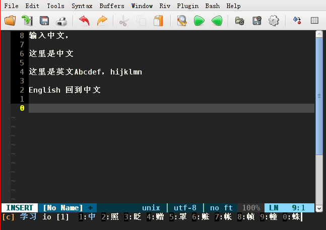

穿越中文输入法
穿越中文输入法（CY Input Method）是一个在 Vim 编辑器 中使用的中文输入方法，目的是为了充分利用 Vim 软件的特性，实现简单高效易用的汉字输入，从而提高文字编辑效率。当然也可以通过扩展，在Linux或Windows系统中使用，也可以在Android手机中通过VimTouch使用。

当前最新版本 3.6 ，公布日期：2014-12-08
目标：成为高效率的中文输入法，并且保持简单易学易用。
主要特性：
- 从键盘设置到汉字编码方法都进行了优化
- 在 Vim 编辑器当中使用，充分利用 Vim 的各种特性。
- 汉字字词编码方案采用最多四个字母组成的音形码方式，尽可能实现简单高效。
- 所有的目标就是为了快速输入，并且尽可能简单易学。
- 支持连续输入
- 支持Linux，Windows等多种平台。
- 当输入大写英文字母时自动切换到英文，默认用 `返回中文状态。
- 支持搜索和全屏定位跳转
- 每次输入自动记录到名称为 y 的 register，供以后随时调用
2014-12-08 更新内容：
- 为了切换方便，Gvim 当中默认切换键改为： Alt-x，终端中使用时可自行设置
- 更新码表文件
- 优化代码